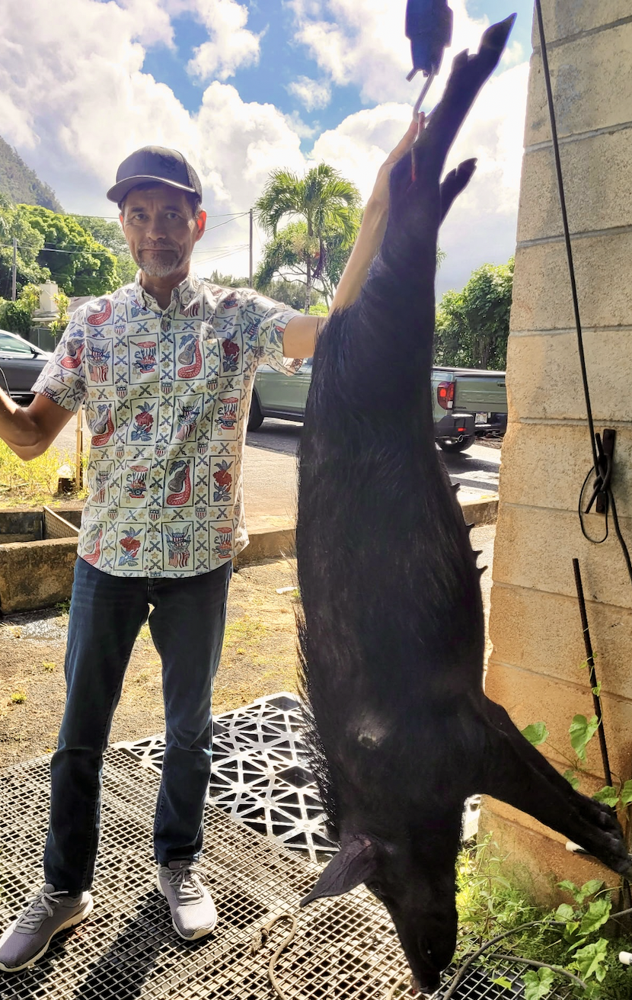

Team Bacon
Feral Pig Eradication · Hawai‘i
Team Bacon is a group of hunters that partners with landowners and land managers across O‘ahu to remove feral pigs — an invasive species that damages native watersheds, degrades habitats for endemic species, and spreads disease through cultivated land.
Dr. Park is a proud member. When he isn’t teaching math, he heads into the mountains with the team to help protect Hawai‘i’s ecosystems the old-fashioned way — on foot, with respect for the land and its animals.

Dr. Park after a successful eradication outing.